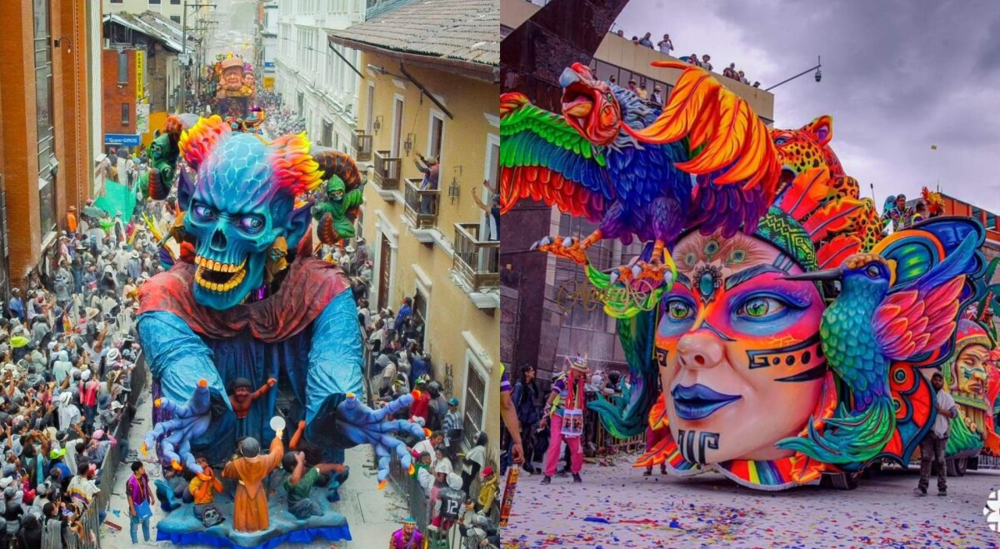
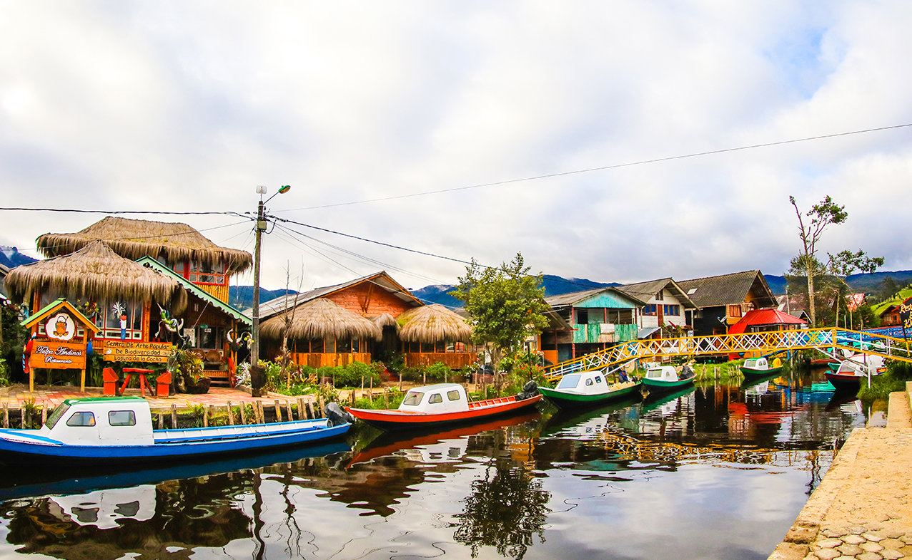
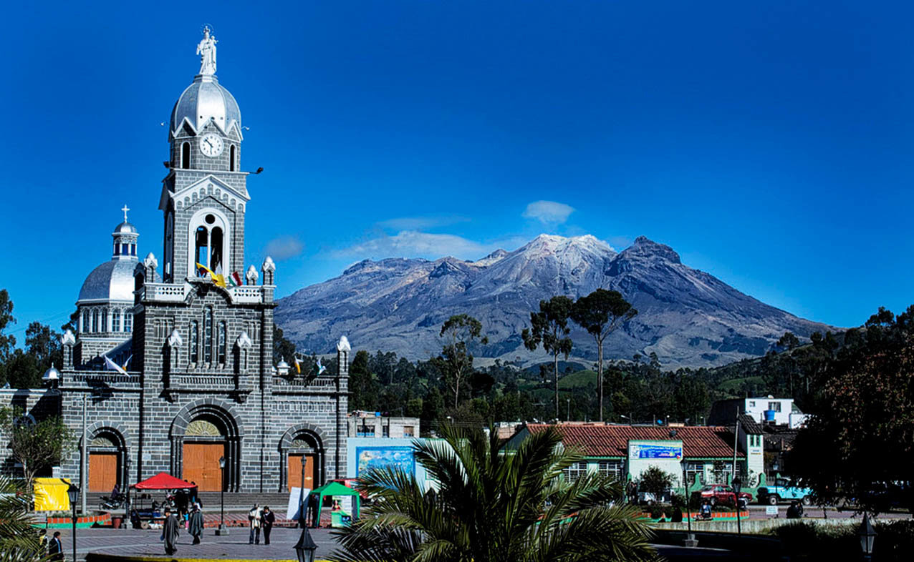
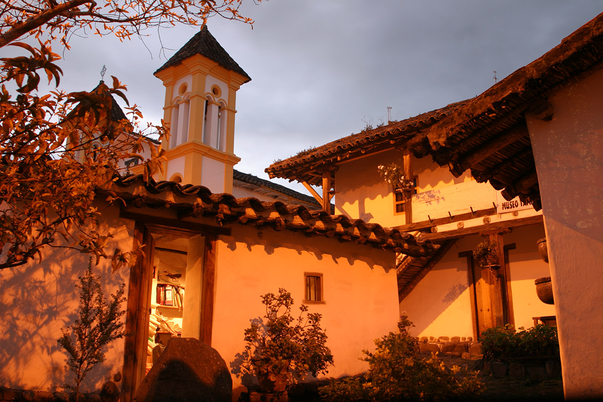

"Nariño"
Región: Andina y pacífica
Puntos de Interés
Carnaval de Negros y Blancos
Es un periodo de convivencia intensa, en el que los hogares se convierten en talleres colectivos para la presentación y transmisión de las artes carnavalescas y en el que personas de todas clases se encuentran para expresar sus visiones de la vida.
Laguna de Cocha
Es un gran embalse natural de origen glaciar, ubicado en la localización colombiana de El Encano, corregimiento del municipio de Pasto, en el departamento de Nariño.
Volcan Cumbal
El volcán Cumbal o Nevado de Cumbal es un estratovolcán ubicado en el municipio de Cumbal, 79 km al suroccidente de la ciudad de Pasto. Con una altitud de 4764 m s. n. m., es el punto más alto del departamento de Nariño
El museo Taminango
Es un museo colombiano ubicado en la ciudad de San Juan de Pasto, y opera en una edificación que data del siglo xvii, elevada a la categoría de monumento nacional en 1971
Gastronomía de la región